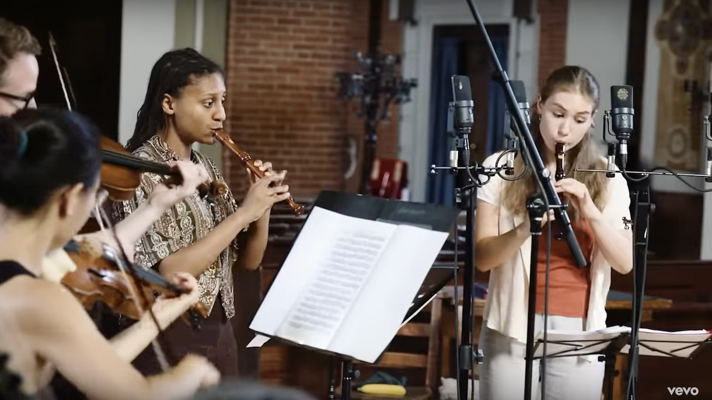
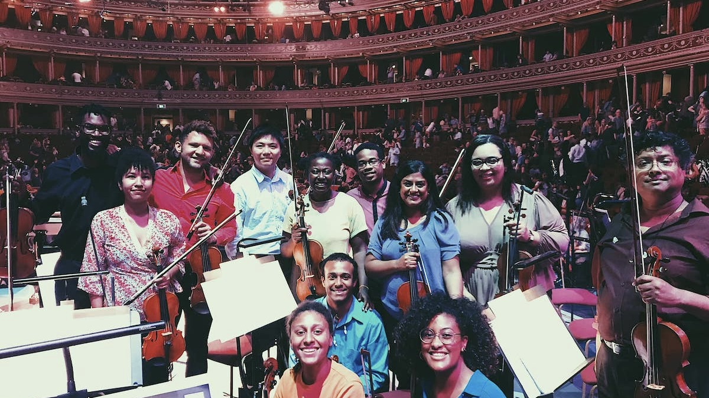
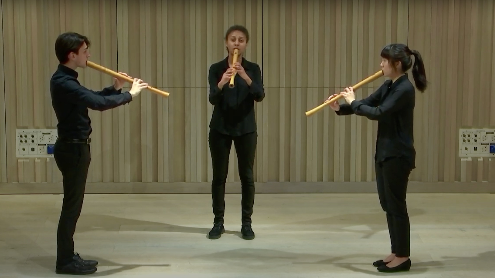
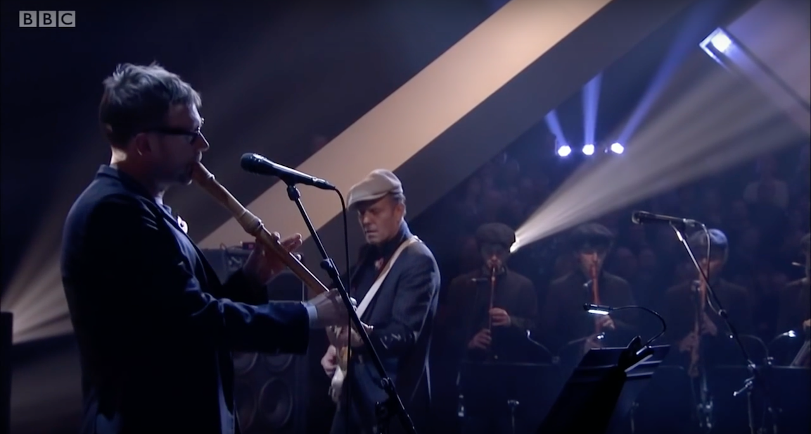
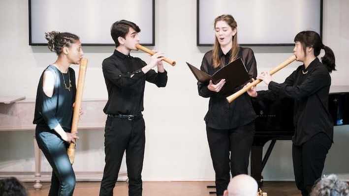
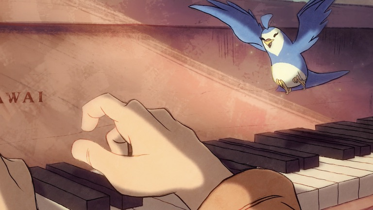
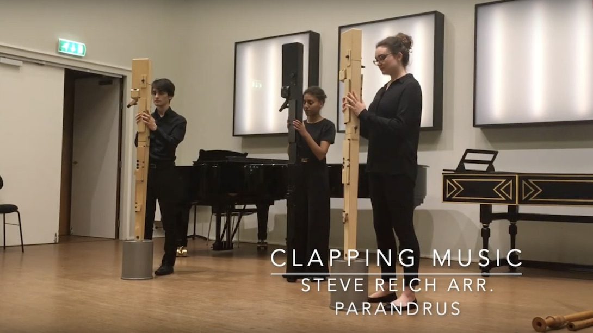

Recording Handel with Lucie Horsch and the Academy of Ancient Music

A Hans Zimmer premiere with Chineke! at the CBeebies Prom

Parandrus play a North Italian medieval madrigal

With The Good, The Bad & The Queen on 'Later with Jools Holland'

A 16th century French chanson, with Parandrus & mezzo-soprano Sarah Anne Champion

Mixing music and film with the animated short 'Morning Joy'

American minimalism on Paetzold bass recorders